Shoutouts
Happy birthday to “La Tacqueria Royalty”. You’re a really nice guy and super down to earth! I always appreciate talking One Piece with ya and I hope that by the end of the Volo league I will have obtained 5% of your soccer power!
Happy birthday to “Always up for a disc-ussion”! I’m always impressed by your dedication to running. You’re always out there running no matter the week and it definitely showed with your awesome 5:18 mile!
Monday
Once I finished C ing my Is and doting my automated tests I met with “Top of the Rope” and we walked home from work together. She works pretty close to me and it’s a nice Monday ritual. We caught up and talked about many things including Marina Run Club, PR reviews and more. Our walks seem to have a podcast like energy to it which I appreciate.
Tuesday
After another day teaching my coworkers about the bits and the bytes I went to “The Philosopher’s” place both to pick up the sleeping bag I accidentally shipped to his apartment. While there I talked about ML systems with him in preparation for some interviews he had and shot a few of the shits. Not many but some for good measure.
Wednesday
Once I floated all my points I went to trivia with “Let me give you a call on the world’s smallest phone,” "Bleaching to the choir,” and a few others. I did this a few weeks ago and it was fun so here we are back at it again.
The way the trivia works is we have 8 regular questions in which we wager anywhere between 1-8 points (meaning how many we get if we get the question correct), with the catch being you can only pick each number from 1-8 once so you want to use 8 when you are more confident and 1 if less so.
I can’t remember too much about any particular question except for the final bonus question which was to fill in a quote from George W. Bush. The quote goes “We are going to keep on trying to strengthen the American family, to make American families a lot more like the ___ and a lot less like the _____.”
The question was to fill in the blanks with the two families. Our host agreed the original question was quite hard and modified it so we only had to get one of the blanks but not the other. As it so happened I happened to see this quote on a YouTube video I was watching about The Simpsons and how controversial it was back in the early 90s so I knew the second blank but not the first but they was enough to get us the win!
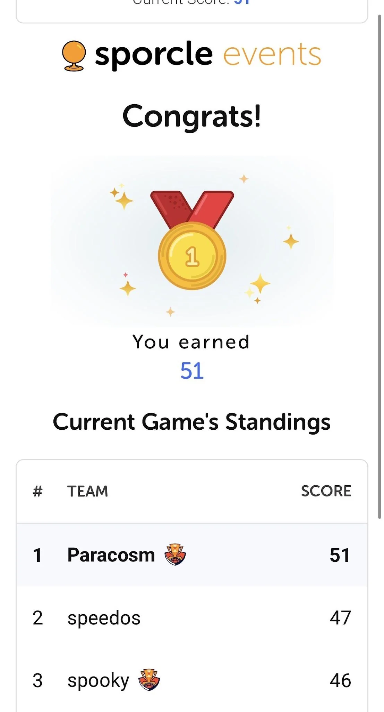
The second round didn’t go quite as well however but I still got to keep my streak of winning the first round!
Thursday
After another day cooking up compilers I treated “La Tacqueria Royalty” to an early birthday dinner. We went to a Mexican restaurant over by South Mission which according to “La Tacqueria Royalty” had some pretty authentic food which is high praise indeed. The birria tacos I got there were quite good and the plate that “La Tacqueria Royalty” got also looked quite good. We hadn’t talked One Piece in a while so it was great to catch up on theories surrounding the current arc. Personally I really hope the real leader of the worst generation, Eustass CAPTAIN Kidd comes in and takes down Imu. While I don’t think that will happen I choose to hold out belief until it happens.
We talked a little about Dune based on my previous newsletter and he informed me that Baron Harkonnen is apparently a bad guy! This makes no sense to me since according to the best media in the Dune franchise (the board game Dune Imperium) Harkonnen is key to my favorite opening strategy which clearly means he is in the right and everyone else is wrong. I will not be elaborating further.
Then I went to “The Awepartment’s” place for movie night with “The Finer Things,” “The Mosher,” “Generic white guy,” “Generic white guy’s girlfriend,” “The Philosopher,” “The Best,” “The Thunder from down under,” and a friend of “The Thunder from down under”.
We watched American psycho which was a pretty funny movie. I’m not sure if it was meant to be horror but there is something about the utter meaningless if the persons life that made it pretty funny. For those who don’t know American Psycho is about this finance bro living in New York who finds no meaning in his life and starts serial killing to find meaning. Seeing someone doing a facsimile of human interactions makes me extra grateful for my life and the fact I don’t need a mask to fit in anywhere.
I did fall asleep a bit but I still saw most of the movie so it counts. I’m pretty sure “The Philosopher” only had to tickle my knee to get me up once.
Friday
In preparation for an upcoming trip I worked from home today or in other words I Slacked off (meaning I was off Slack).
Towards the evening I met up with “The Quant,” “Not Misinformed,” and “The Foxy Lady” “The to head off towards Yosemite. Huge thanks to “The Yogi” for organizing a big camping trip with a bunch of people including “The Filmmaker,” “Mr. Socksessful," “The Raja of Rhythm,” “This little piggie didn’t go to the slaughter house,” and many others.
The car I was in had me, “The Quant,” “Not Misinformed,” and “The Foxy Lady” and it was a real blast. I think “The Foxy lady” can match me in unhingedness which made for a very entertaining car ride. I hit em with a bunch of lateral thinking puzzles, got her and “Not Misinformed” on my newsletter, and engaged in a wide degree of verbal shenanigans.
We stopped at In-N-Out along the way but unfortunately I already had two Plov bowls for dinner so I could only have one double double which was a disappointment I will have to rectify later on this trip.
By the time we got to Yosemite it was close to midnight so we didn’t do too much besides setting up tents and getting ready for bed. When I got there I immediately realized how dark it was and was glad I happened to have a headlamp. I say happened to have a headlamp because I didn’t have the foresight to intentionally bring one; I happened to have one in my jacket pocket from the time I tried to run an ultramarathon.
The other thing I didn’t think much about at the time was the storage lockers we had to keep the bears away from our food. With everyone putting stuff in there it made my decision to put individual items like toothpaste in there a mistake since it got shuffled around and moved a bunch and I couldn’t find it afterwards. Next time I need to be more careful and put my items away more carefully.
Thanks to “The Philosopher” for recommending I get a sleeping pad. If I hadn’t done that the sleeping situation would have been quite difficult indeed.
I settled into my tent and slept better than I thought I would by camping standards.
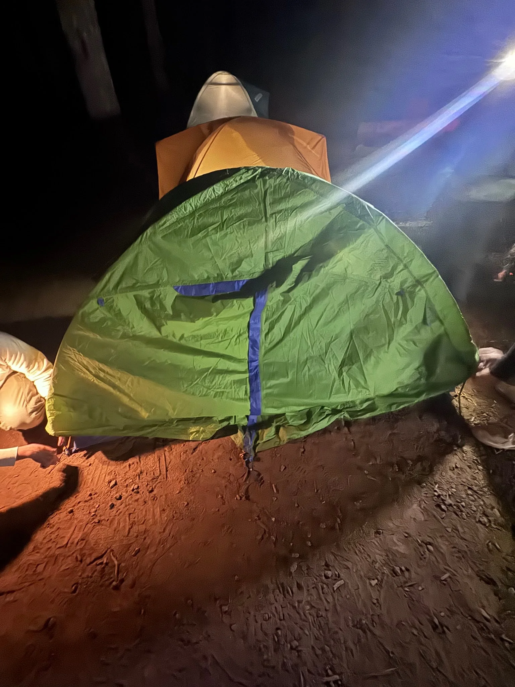
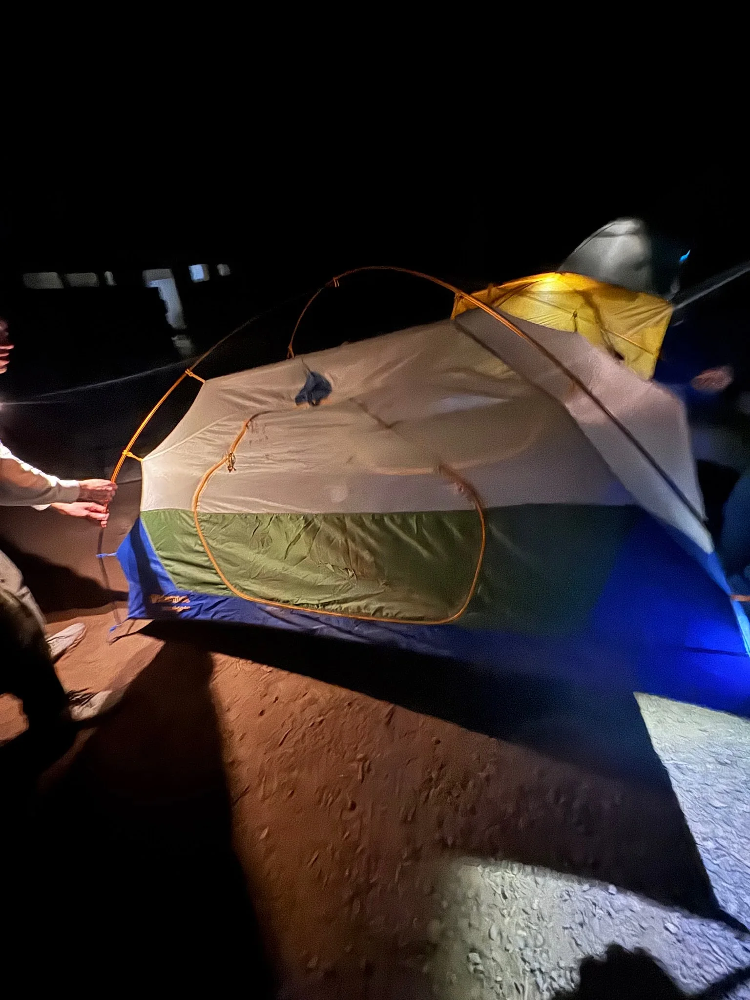
Saturday
After getting up and having some breakfast we headed off on our first hike of the day going to a nice picturesque meadow.
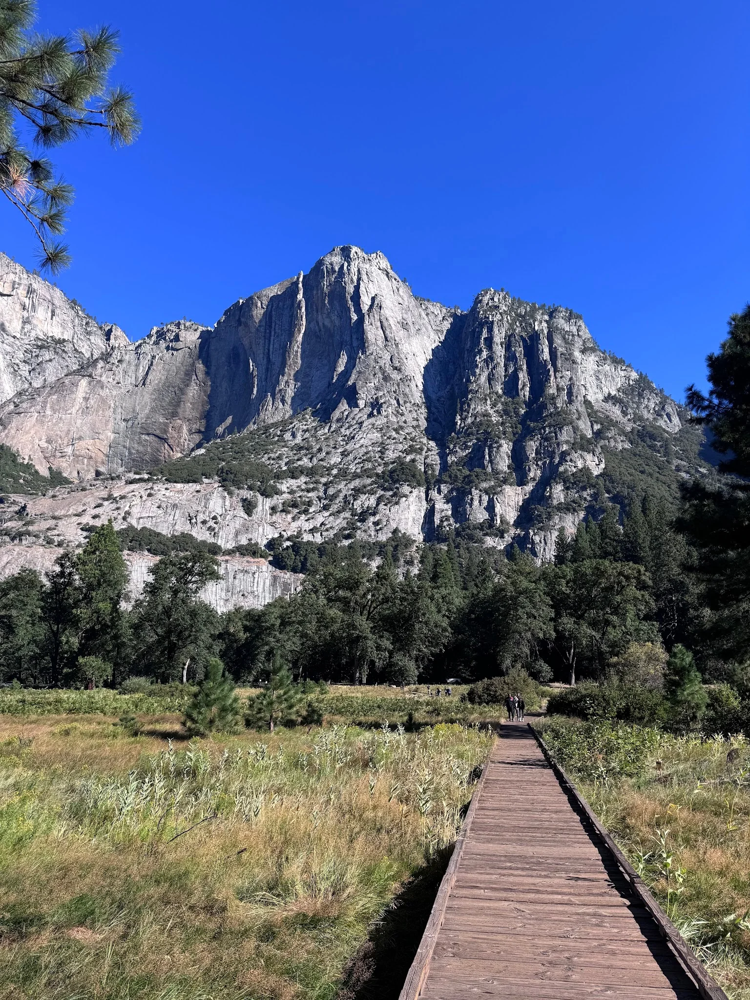
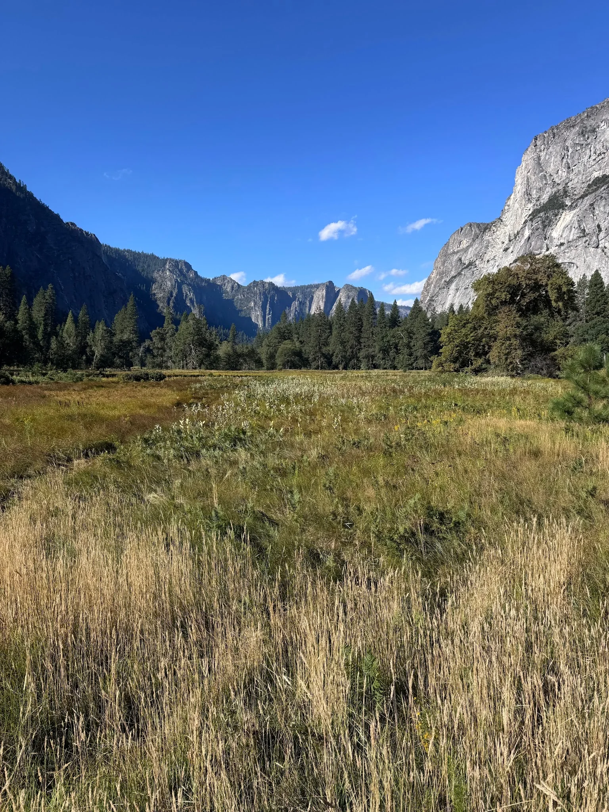
We then did another hike which involved going to a rock fall (a waterless waterfall that had rocks in it).
I don’t have any pictures of it but rest assured it looked quite majestic
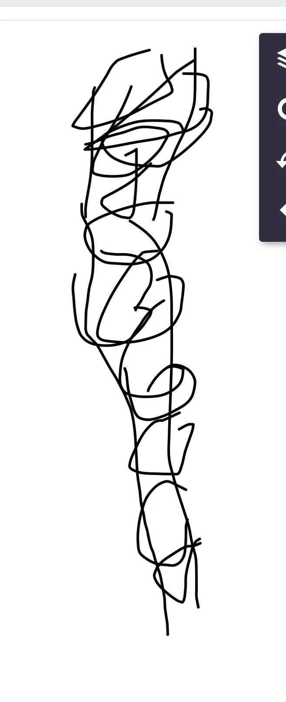
Once we finished that hike we went up to Vernal falls. It was quite a solid hike albeit with some slightly slippery parts.
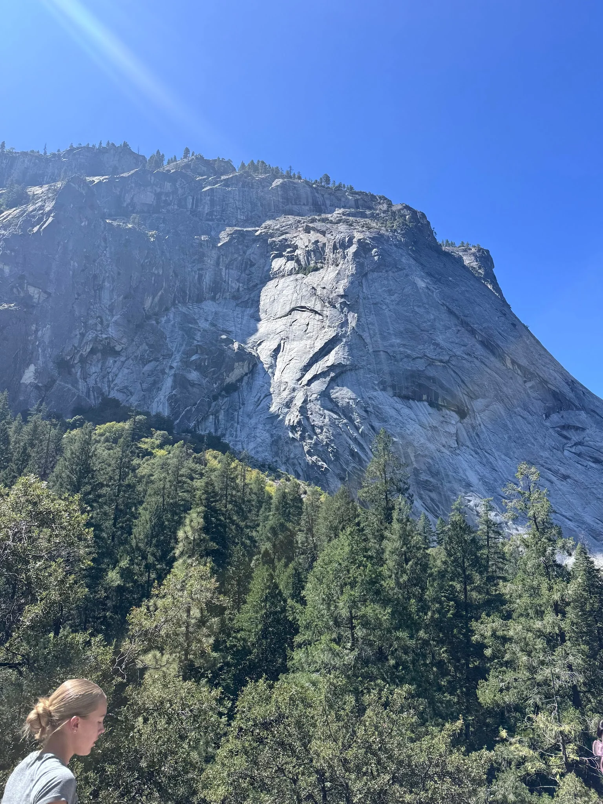
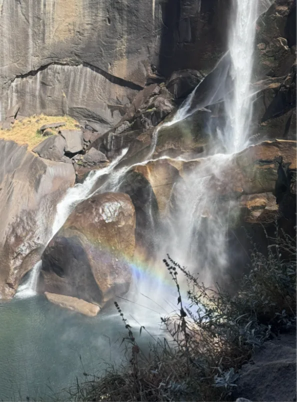
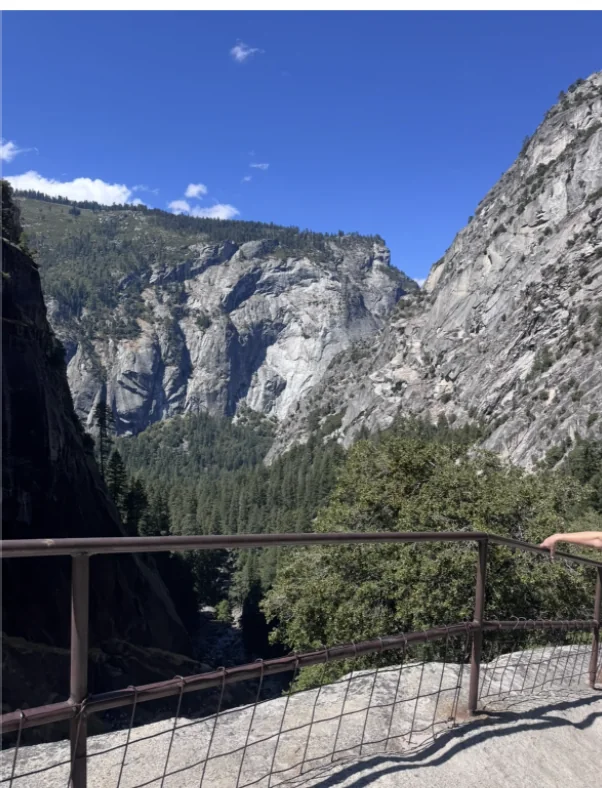
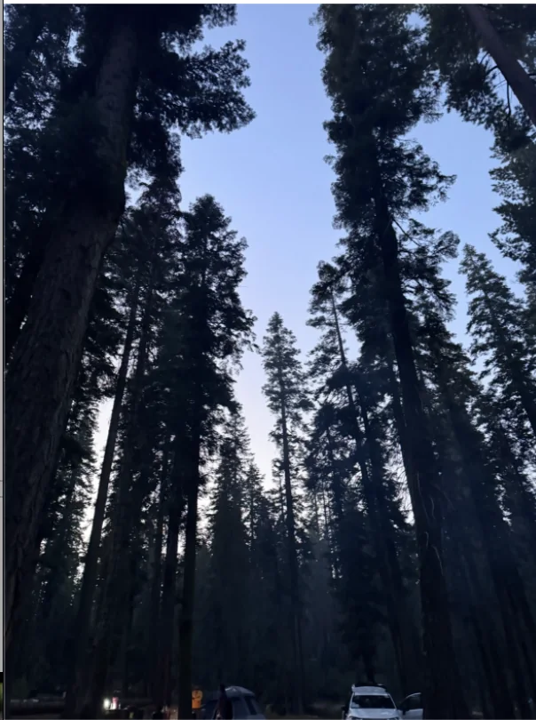
Going down was a lot harder for me than going up though. Going up I could essentially brute force it and speed walk my way up provided there weren’t too many people but going down I had to really watch my step and make sure I wasn’t slipping.
Once we made it down we stopped at a lodge area called Curry village for a break. I ordered a burger from a restaurant around there since I figured it could be nice to have a solid meal but I found this to be one of the worst burgers I’ve had in a while. If I wanted something incredibly dry I would hang out with “The Philosopher” and revel in his wit. If the Hawaiian drive inn place I went to was a great burger at a cheap price this was the exact opposite being a terrible burger at a high price ($22). On top of that I had to wait 45 minutes for the privilege. For any readers, if you are going to a curry village don’t get the burger there.
On the plus side I played a fun new card game called golf taught to me by “Not Misinformed” wherein you try to pair up cards in a way where you minimize points. It was quite fun! Afterwards we went back to the campsite and got stuff setup for dinner. Regrettably I made the mistake of not bringing solid dinner food which meant I had to mooch off of everyone else which I am very grateful for.
I tried what other people described as some cursed combinations of food including a peanut butter sandwich with some chicken noodle soup which stressed out “This little piggie didn’t go to the slaughterhouse”. It wasn’t the best meal I ever had sure but it was pretty solid. We did the classic campfire thing afterwords and had some smores (shoutout to whoever brought the vegan marshmallows you are a real one). It was the first time I ever had a smore and it was incredible! I can see why people like these things! Although apparently my method of putting a marshmallow between two pieces of chocolate and putting that over the campfire was also apparently cursed.
In the evening a few of us went to a star gazing talk held by one of the park rangers. She walked us through some of the different star constellations we could see including the Milky Way, the big dipper, scorpio, and others. During the talk we laid down on the concrete to view the stars and I may have taken a nap. Long time readers will know this isn’t the first time I napped on concrete but I think it was more satisfying than the first time.
We ended the night with more games and hanging out and the sudden blast of it all made me feel like a kid again which really tickled me!
Sunday
I woke up and had a bit of solo time before everyone else got up and I just sat at the campsite and appreciated the really nice view
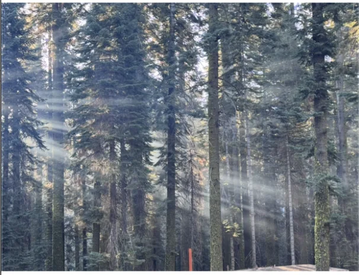
This felt sooo relaxing. Just sitting here with nothing to do but enjoy the nature and feel at peace. I think this was an underrated moment of the trip I really appreciated because I felt like I could really just slow down with nothing to do but enjoy.
Once everyone else got up we set out for our hike to Sentinel dome.
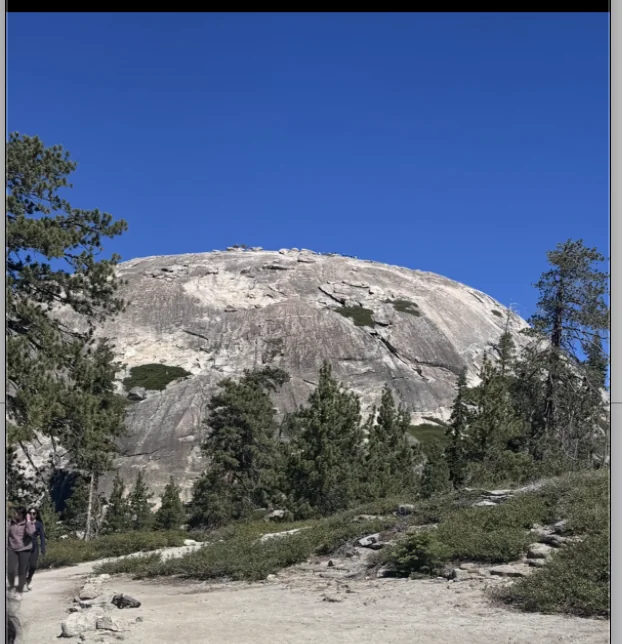
This hike was certainly easier than going up the waterfall with some great views
Once we finished the dome we went down to a gorge that probably has a name but I’m forgetting what it is so for now lets call it the Giga Gorge just because.
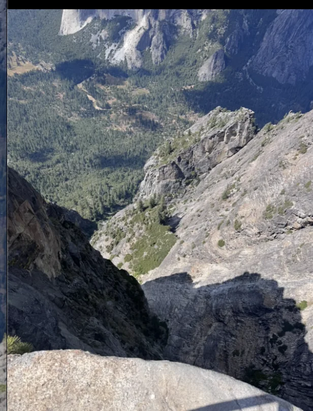
Of all the views I think Giga Gorge was my favorite if only because of the sheer awe I had looking down and seeing Yosemite sprawl out before me in a way no other place had truly captured.
Originally afterwards there was another viewpoint we were going to go to called Glacier viewpoint but the traffic getting there was so bad we decided to bail on that and go back to camp where I played more card games with “The Quant,” “The Foxy Lady," and “Not Misinformed”.
After dinner and more smores we told spooky stories around the campfire. I can’t share the others but the one I told was about a time back in 2019 when I took the bus from SF to Marin at midnight. When it was just me and the driver on the bus we passed through The Tenderloin and someone got on the bus without paying (this is more egregious than the MUNI since this particular bus requires you to pay upfront and the drivers enforce that more), and sat right next to me and tried touching my wallet and laptop. He kept poking me asking me what I was doing and I told him to go away. The bus driver was shouting at him to get off the bus which he did … only for him to get back on two seconds later. He would repeat this exercise of get on, get up in my face, and leave about 5-6 times before he finally left. That did scare me enough that I decided to never take the bus home that late again.
“The Foxy Lady” had a great idea for us to all sign a thank you post card for “The Yogi” for organizing the whole trip. She really did do a lot to get the campsites, plan the itinerary, put together an incredibly detailed spreadsheet (which I will admit I didn’t read all of :( ), and do a great job wrangling 19 cats wearing human suits. Truly a herculean endeavor.
Monday
I’m doing Monday in this issue so I can conclude the Yosemite arc in a single episode. I woke up and once again savored the solitary beauty I got from the view with nobody else awake. There is truly something special here.
Once everyone else woke up we started packing and getting ready for our trip back to civilization. The ride back was pretty uneventful; I asked some more lateral thinking puzzles and caught up with the world that felt like it paused itself for 3 days.
On the way back we stopped at a different In-N-Out and I made up for my previous folly and got 4 double doubles and proceeded to finish em all and some fries to boot.
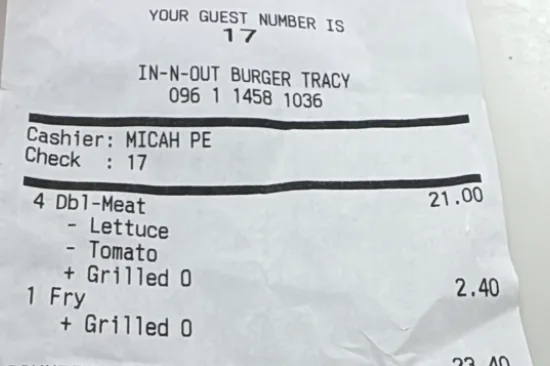
Once we got back to the Bay we dropped off “The Foxy Lady” and “Not Misinformed” before heading back to S.F. Shoutout to “The Foxy Lady” and “Not Misinformed” for helping me make our car the most unhinged car on the trip. I feel like you guys really get me and I greatly enjoyed all the card games, lateral thinking puzzles, and seeing “The Foxy Lady” crash out during Dutch Blitz.
After getting back to S.F I took a great shower and then I walked around for a while before catching up with “The Fisherwoman”. She invited me as a +1 to the potluck of one of her other friends who I met a while back. The potluck itself was interesting. The theme was to bring a dish from your home which to most people meant their childhood home. The vibe I got was everyone there was pretty big into cooking and really passionate about all these different dishes which was cool to see. Admittedly my contribution was more in the buying a bottle of sake but if I had known about this more than 2 hours in advance I think I could have cooked the pasta I used to have for lunch a lot as a kid.
Everyone there was quite nice and I enjoyed my time there, unfortunately I had a small work emergency which meant I did need to leave early. I resolved things in short order and admittedly maybe could have gone back if I had really wanted to but I also got an invite to movie night at “The Awepartment” and at that moment I kinda wanted something a bit more chill.
I went to “The Awepartment’s” place and watched John Wick with him, “The Philosopher,” and one of “The Awepartment’s” other friends. Ok admittedly I did fall asleep for 80% of the movie but in my defense “The Awepartment” has a really comfy couch and it’s hard to stay awake on that after a couple days of camping with admittedly not as much sleep as usual. It was still a great vibe though.
Personal training progress for the week
The dot plots below show every exercise logged through 9/3/2026; later dates are excluded. The x-axis is time, the y-axis is logged weight, and dot size represents reps or logged time. Bodyweight sets appear on the BW baseline.

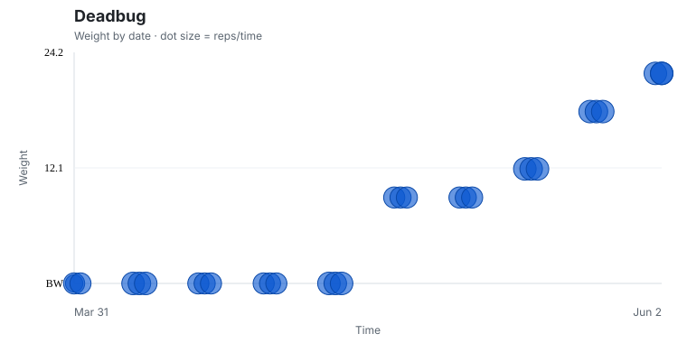


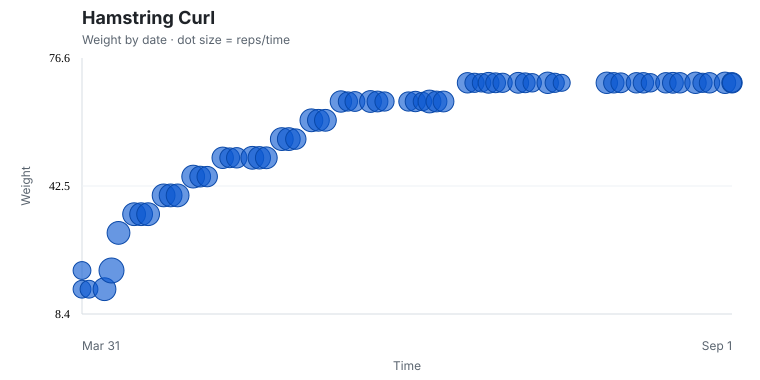

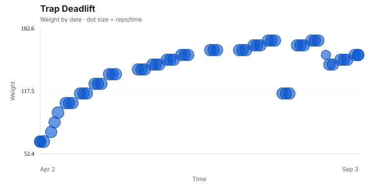


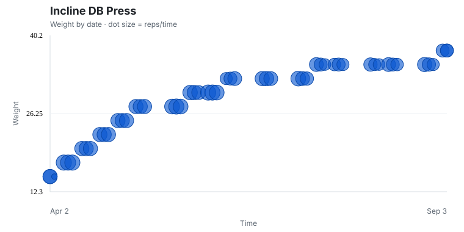
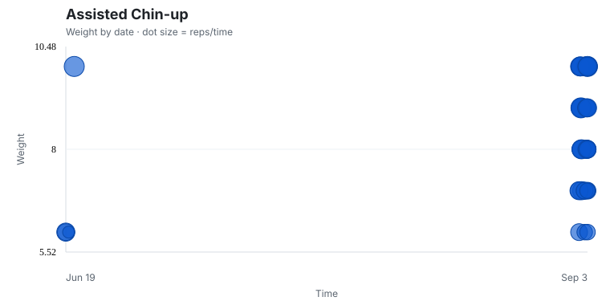
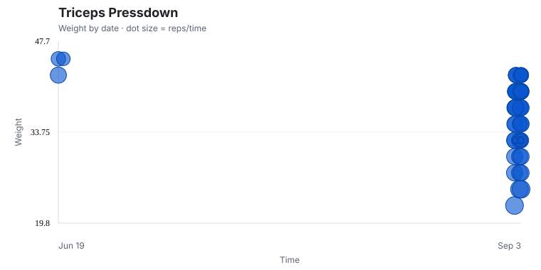
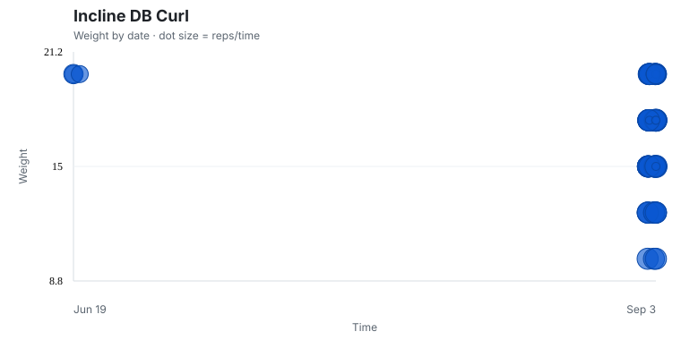
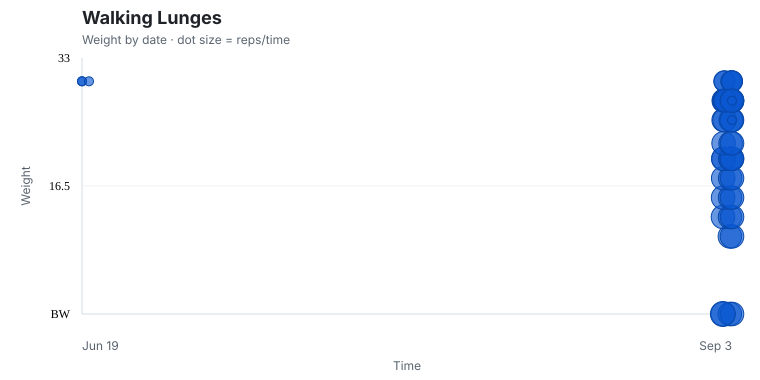
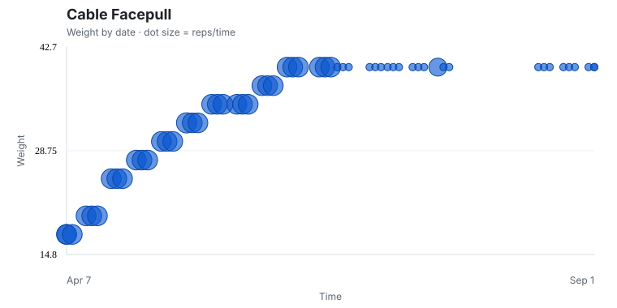
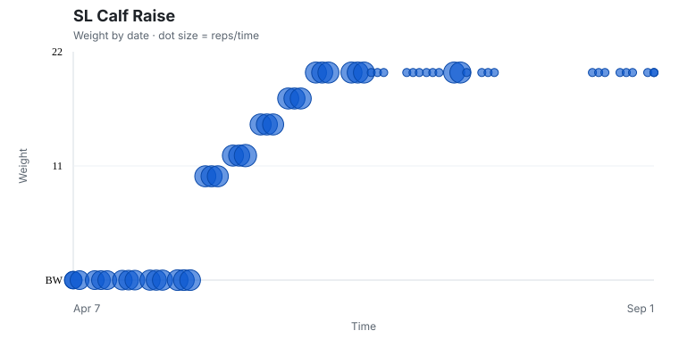
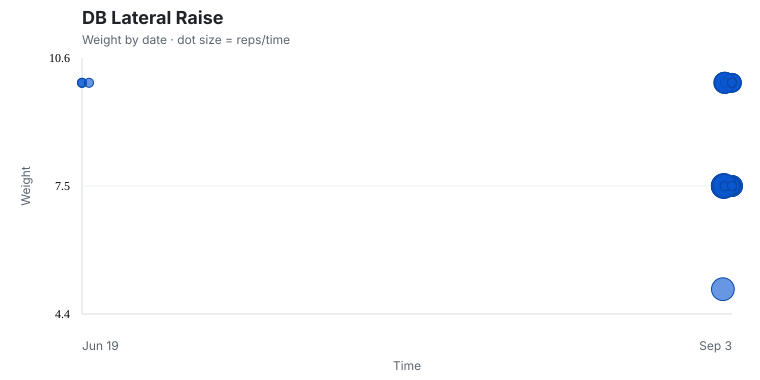
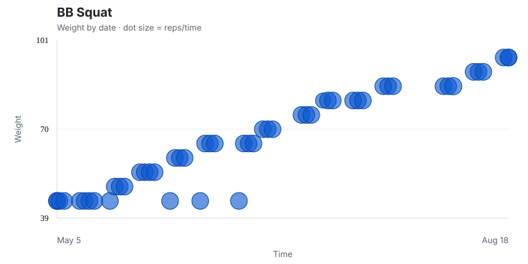


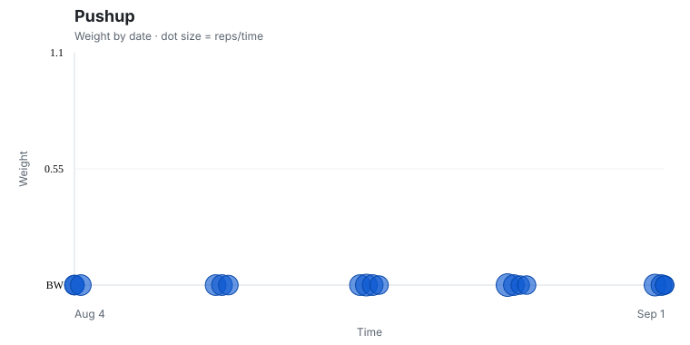
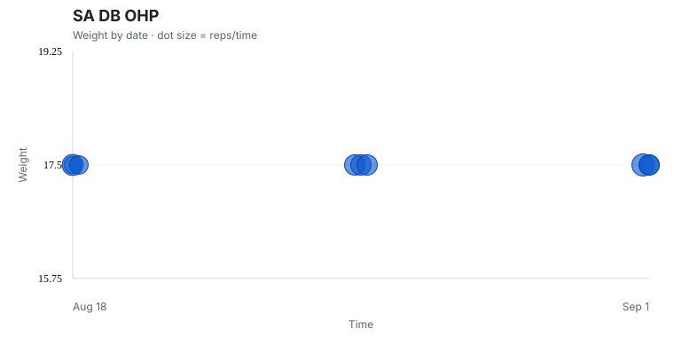
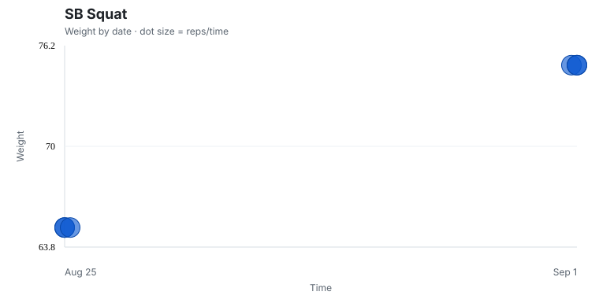

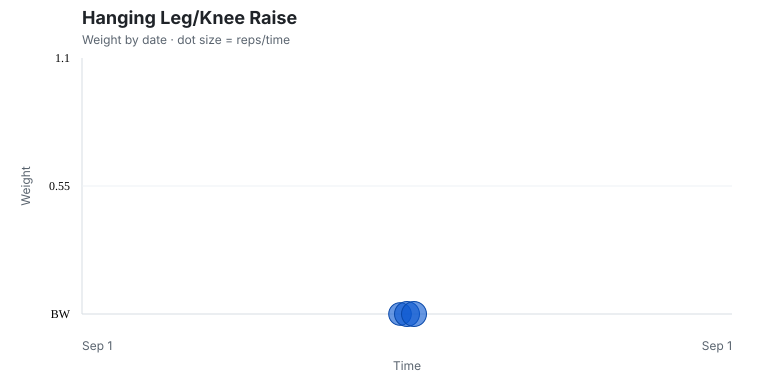